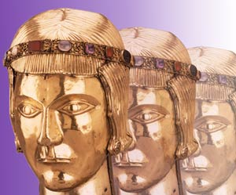

|
|
How
far back do your memories go?
Joseph Hotung Great Court Gallery, Room 35 To
celebrate our 250th anniversary, this major display incorporates
the whole Museum and Read the Exhibition opening speech by Ben Okri (Booker Prize Winner) Order a Museum of the Mind Catalogue from the Exhibition Shop Take an Online Tour of the Exhibition sponsored by |

|
||
| Gallery talks: 1, 2, 20, 22, 30 August | |||